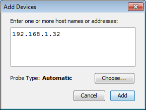

Adding Devices Manually
Add devices to your map manually using the Device...
command, available from the Insert menu or the Add
Device(s)... command, available from the context menu
To add devices manually:
- Make sure the map is in Edit mode.
- From the Insert menu, choose Device..., or Right/Ctrl-click in the window and choose Add
Device(s)... from the context menu. The Add Devices window appears, as shown below.
- Enter the device names and/or addresses as shown below.
- The device(s) will be monitored with the indicated probe.
To select a different probe type, click Choose... and select
a probe as described in Select Probe Window.
- Click Add. All devices entered are added to
the map.
Note: If you enter a DNS name, the device is added to your map only
if a DNS entry can be found.

Add Device(s) window.
- Enter one or more host names
or addresses - Enter individual host names or addresses or paste
a list of DNS names, IP addresses, or WINS names into this window. Entries must be separated by commas or by whitespace
characters, such as spaces, tabs, or carriage returns. You can copy a list
of host names and addresses from a text file or from a traceroute program.
You can also use WINS
names (preceded by "\\"). For each entry that responds, a
device is added to the map.
- Probe Type - Shows the
type of probe currently assigned to the device. Click Choose...
to open the Select Probe window and choose a different probe.
- Click Add to add the devices to the map.
Note: If any of the device names cannot be resolved (if a device
name is not configured in your domain name system server) or if a device
cannot be tested with the selected probe, don't worry; you'll get a chance
to correct the entry.
IPv6 Note: To ensure that when possible, host names are resolved to IPv6
addresses rather than IPv4 addresses, enclose the host name in square
brackets ([]) as shown in the example.